速览
《星之卡比 超级豪华版》于 1996 年在 SFC 发售。《梦之泉》之后有一段准备 SFC 开发环境的时期，他手上也终于换成了有窗口系统的 Macintosh。本作两大概念：二人同时游玩与合集（Omnibus）。宫本茂先生曾说：马力欧系列也想做双人，但因速度太快做不到，卡比比马力欧慢，应该行吧？可在横版卷轴、靠跳跃越过障碍的游戏里，两人互相拉扯卷轴很难成立；而且卡比已有复制能力，速度并不慢。难的要求也要解决——于是想出 Helper 系统：分出主角与配角，镜头只追主角，配角出画也无妨，跑太远就用「空间跳跃」回来。再把它和复制能力咬合：敌人本身变成玩家角色，乐趣与个性一石二鳥，代价是几乎每种能力都要做角色性能与参数。复制帽子也从此诞生，角色性大增（后来做《任天堂明星大乱斗》时也因帽子吃了大苦头）。复制能力还加入了按方向/按键组合的多种招式，因此杂兵也引入了耐久力，招式强弱有了意义；卡比体力也由 6 格变成模拟量。合集方面：多个剧本贴在软木板上，各自主题不同（竞速、严肃剧情……）。理由是通关过长的游戏已经让人吃不消——每个剧本短短地分出胜负、玩法各异，体量大也不易腻。首个剧本「春风」原本不能用复制，是应任天堂制作人要求才勉强加入，他至今觉得至少第一遍该无复制。企划中还有被砍掉的剧本「阳炎馆」。开发中途引入的 CG 背景他认为不太成功——与需要多种地形拼接的卡比相性不好，但今天的研究会通往明天的作品。
1. 背景与两大概念 0:00
本作 1996 年在 SFC 发售。《梦之泉》后有一段准备 SFC 开发环境的时期；他手上终于换成有窗口系统的 Macintosh（此前用 PC-9801）。
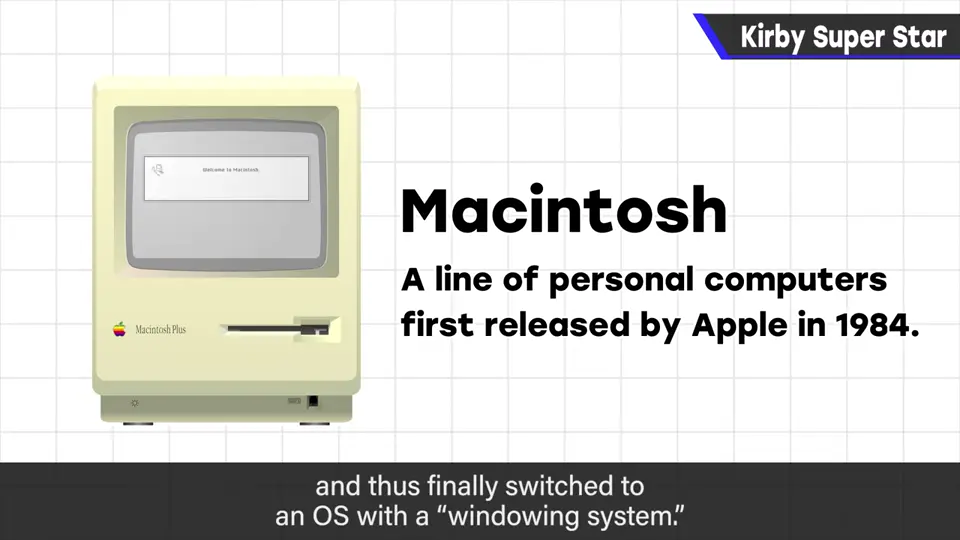
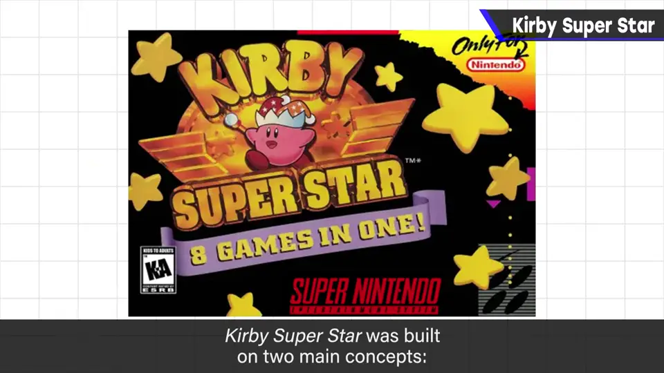
2. 二人同时游玩的难题 0:50
宫本茂先生说：马力欧系列也想做双人，但速度太快做不到；卡比比马力欧慢，应该行吧？
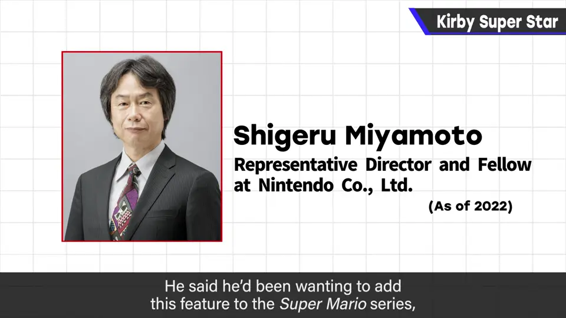
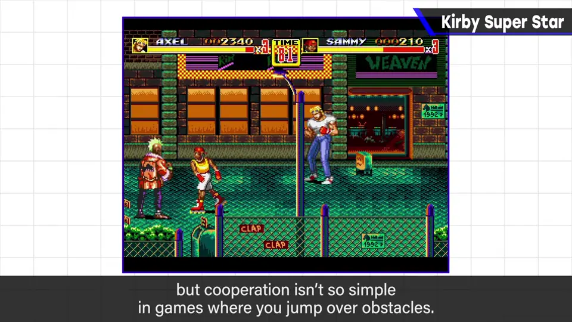
固定画面战斗的清版动作还好，但靠跳跃越过障碍的横版游戏，两人互相拉扯卷轴很难成立；何况卡比已有复制能力，速度并不慢。
3. Helper 系统：主角与配角 2:05
难的要求也必须解决。他把角色分为主角与配角：
- 镜头一直追主角。
- 配角出画也无妨，系统允许这种情况。
- 跑出画面太远的角色用「空间跳跃」回来。
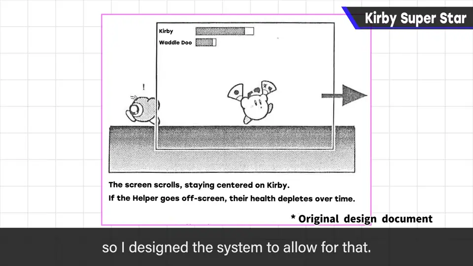
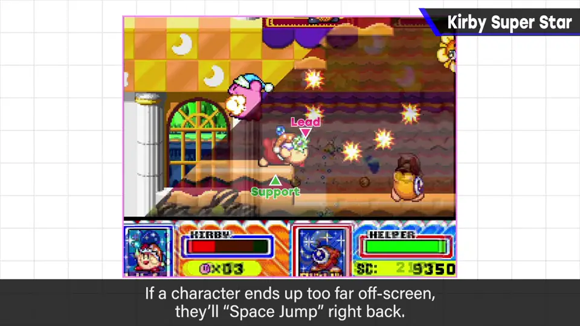
4. 与复制能力咬合 2:40
主角/配角再与复制能力结合：敌人本身变成玩家角色——乐趣和个性一石二鸟。
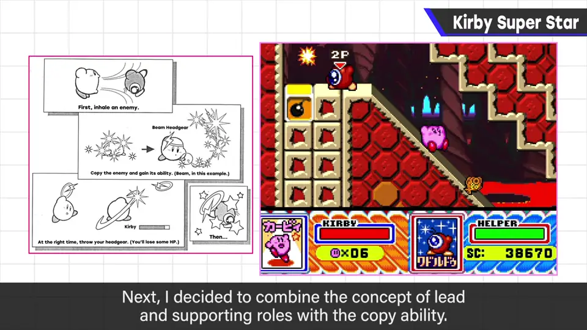
代价是几乎每种复制能力都要做角色性能和参数，但这没办法。
复制帽子也在此首次出现——制作 Helper 需要具体的「物件」，而更重要的是角色性飞跃提升；卡比原型简单，这种装饰很合适。
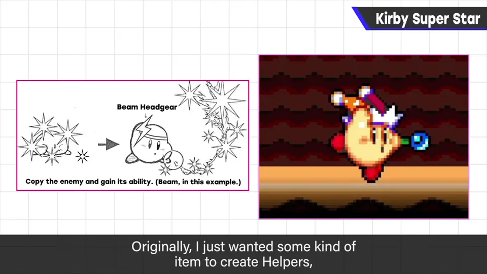
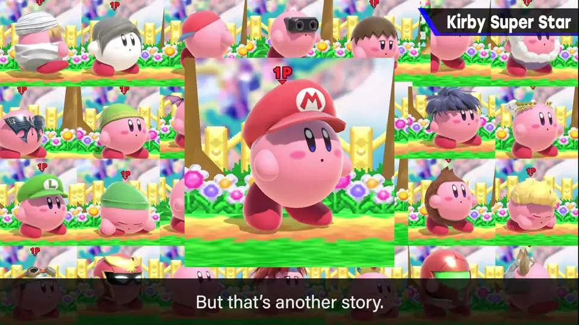
5. 复制能力的多种招式 3:50
《梦之泉》中每种能力只有一招；本作可用方向输入等指令使出多种招式。
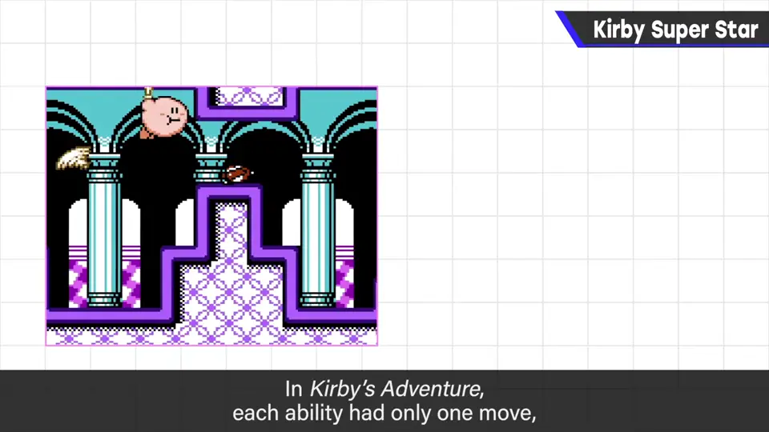
因此普通杂兵也引入耐久力（以往除少数外基本一击死），招式强弱有了意义，能力个性更突出；这也成为后来卡比系列不可缺的要素。卡比体力也由 6 格变为模拟量。
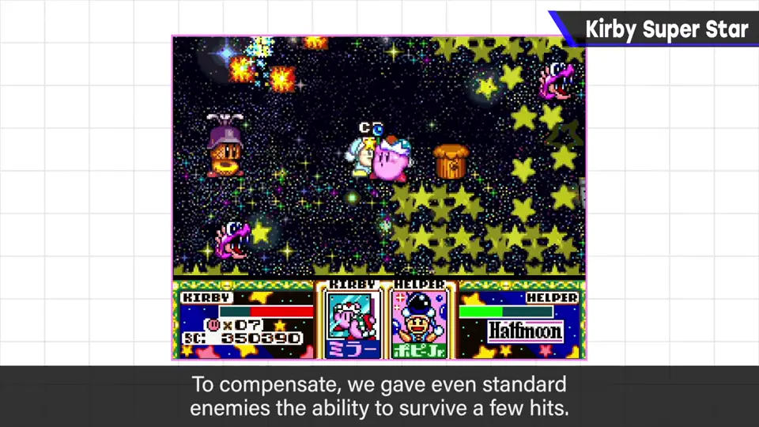
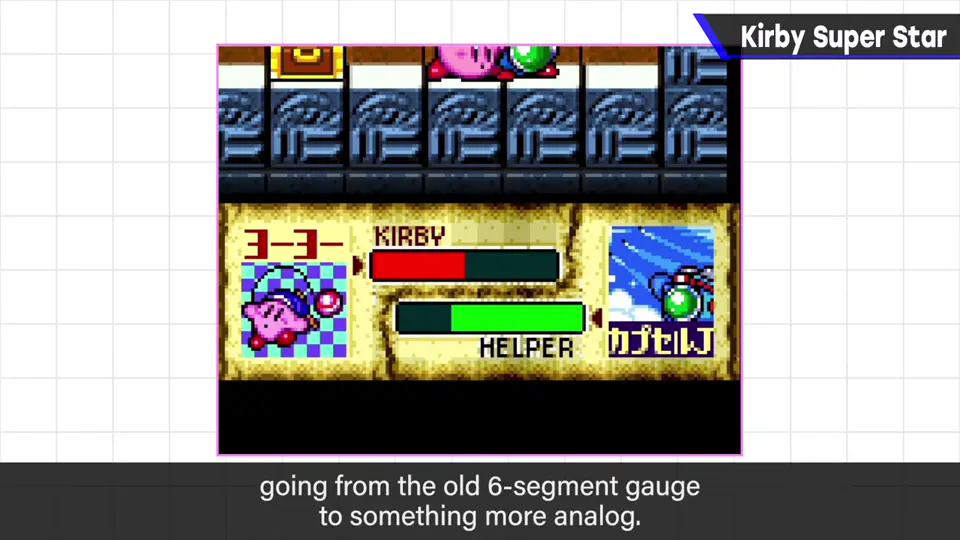
6. 合集（Omnibus） 4:34
多个剧本贴在软木板上，选择后开始主题不同的游戏：竞速般的游戏、严肃剧情的游戏……
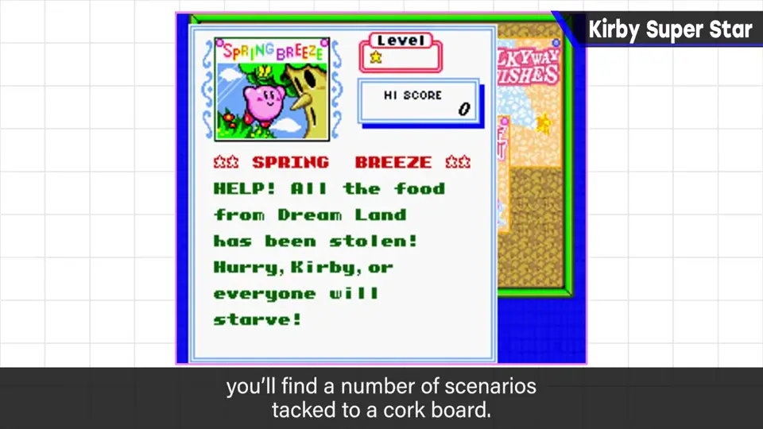
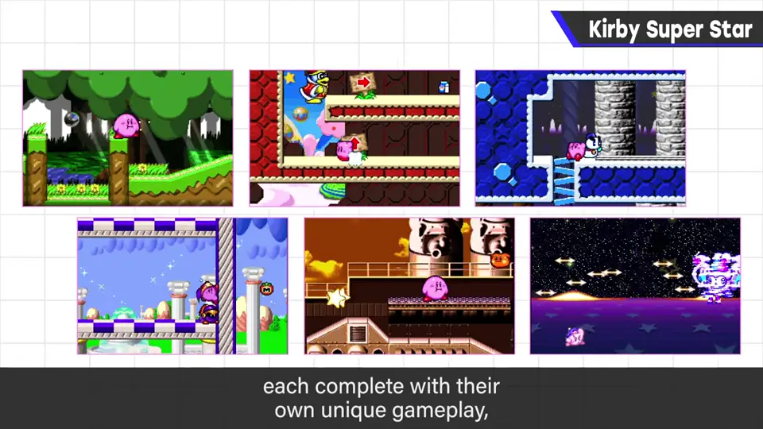
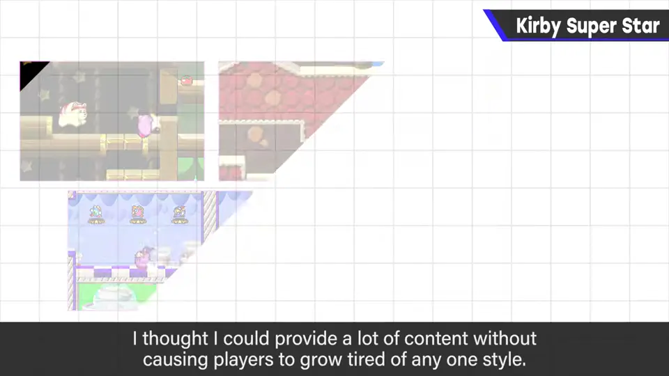
首个剧本「春风」原本不能用复制，是应任天堂制作人要求勉强加入；他至今觉得至少第一遍该无复制。企划中还有被砍掉的剧本「阳炎馆」：被封住嘴的卡比把复制能力当作道具的生存冒险。
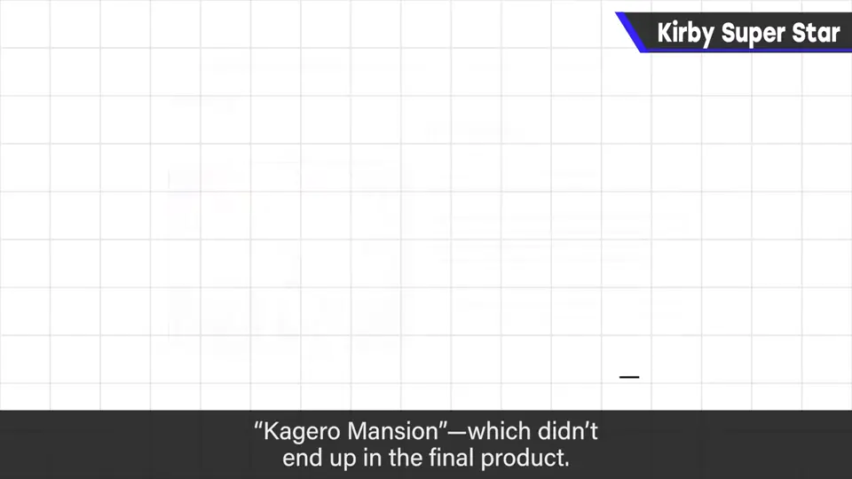
7. CG 背景的尝试 6:20
开发中途引入 CG 背景。他认为不太成功：受《超级大金刚》等影响，那是认真研究 CG 背景的时代，但员工成熟需要时间，且与需要多种地形拼接的卡比相性不好。
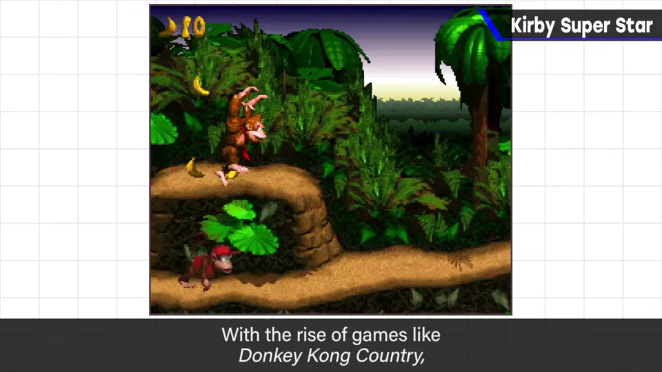
8. 结语 6:53
双人、合集、复制能力的多彩招式与帽子，让本作成为「决定版」。樱井亲自导演的横版卡比只有初代、《梦之泉》与本作三部。
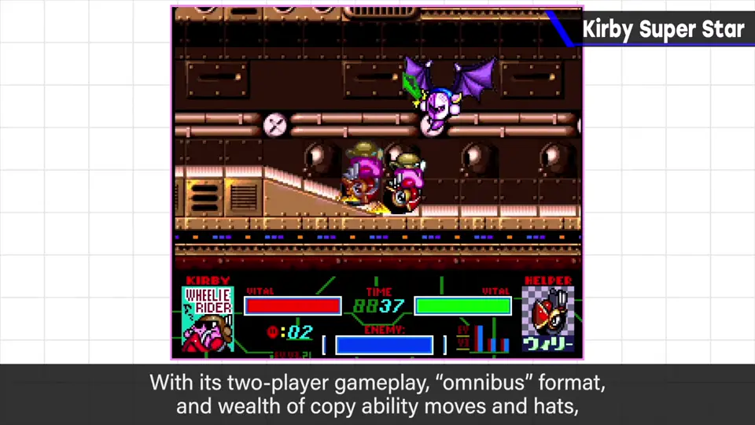
自测题
1. 为什么横版跳跃游戏很难做二人同时游玩？
两个同等权重的角色会互相拉扯卷轴，而跳跃越障需要看清画面。 1:30
2. Helper 系统如何解决双人卷轴问题？
分主角与配角，镜头只追主角，配角出画可用空间跳跃回来。 2:20
3. 樱井为什么采用「合集」结构？
通关过长的游戏让人吃不消；短剧本各自决胜负、玩法各异，大体量也不易腻。 4:56